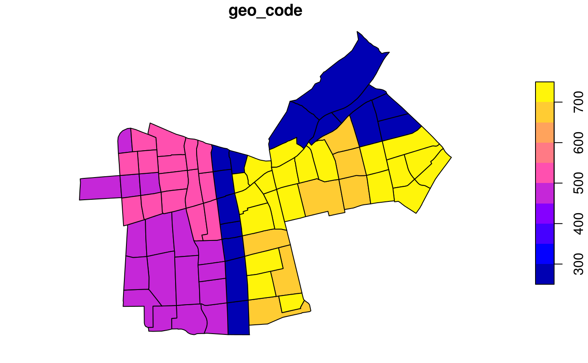

pct-international.RmdThe package README shows how the PCT can be used to get and reproduce some of the datasets from the PCT package, based on an example in the city of Leeds. This vignette shows how the package can be used to create estimates of cycling potential in other cities.
Let’s start by loading the package:
The input data for this vignetted was created using code in the pctSantiago project. It looks like this, in terms of the flow data:
head(santiago_od)
#> ZonaOrigen ZonaDestino n av_weight all range_weights pcycle
#> 1 259 497 5 690.5146 3452.573 62.42723 0
#> 2 260 261 17 205.6069 3495.318 967.24461 0
#> 3 261 260 17 227.5245 3867.916 967.24461 0
#> 4 263 264 5 517.2128 2586.064 819.21471 0
#> 5 264 263 5 508.4814 2542.407 852.77144 0
#> 6 266 501 2 1982.2633 3964.527 1700.07456 0In terms of the zone data, they look like this:
sf:::print.sf(santiago_zones)
#> Simple feature collection with 75 features and 1 field
#> geometry type: POLYGON
#> dimension: XY
#> bbox: xmin: -70.69203 ymin: -33.47766 xmax: -70.58239 ymax: -33.403
#> epsg (SRID): 4326
#> proj4string: +proj=longlat +datum=WGS84 +no_defs
#> First 10 features:
#> geo_code geometry
#> 259 259 POLYGON ((-70.65174 -33.431...
#> 260 260 POLYGON ((-70.65008 -33.443...
#> 261 261 POLYGON ((-70.64562 -33.437...
#> 262 262 POLYGON ((-70.64643 -33.477...
#> 263 263 POLYGON ((-70.64913 -33.459...
#> 264 264 POLYGON ((-70.64914 -33.459...
#> 265 265 POLYGON ((-70.65058 -33.450...
#> 266 266 POLYGON ((-70.65058 -33.450...
#> 292 292 POLYGON ((-70.60615 -33.419...
#> 293 293 POLYGON ((-70.60673 -33.415...
plot(santiago_zones)